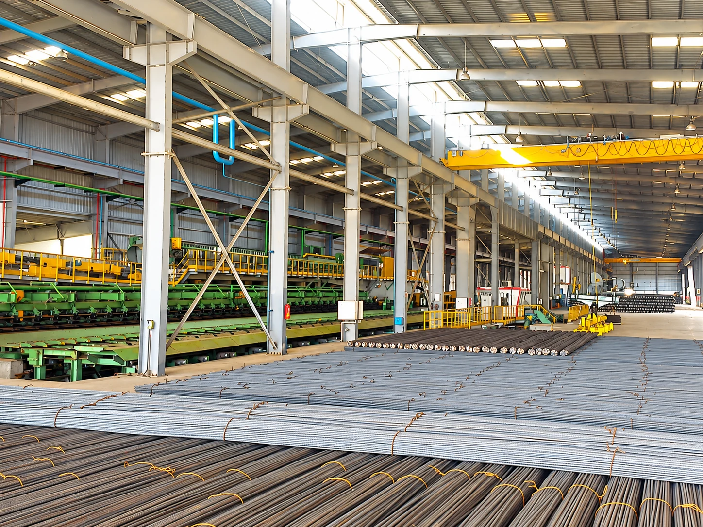
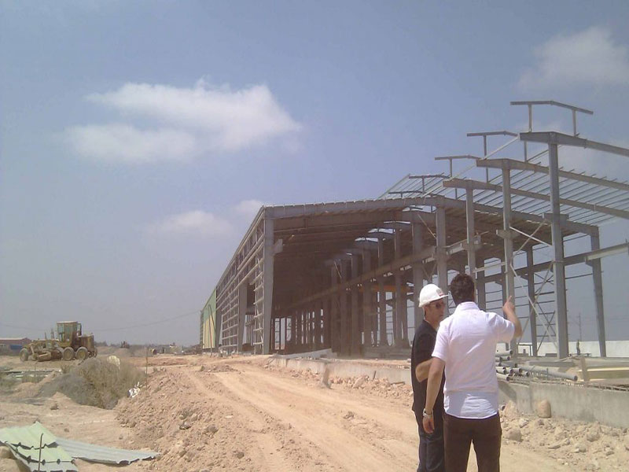
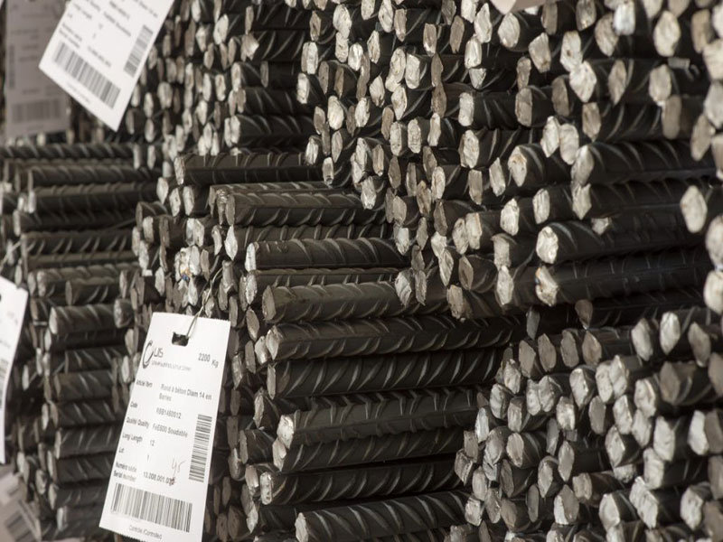
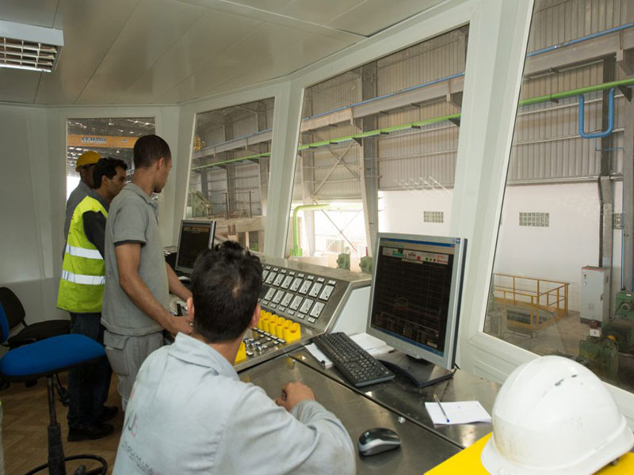
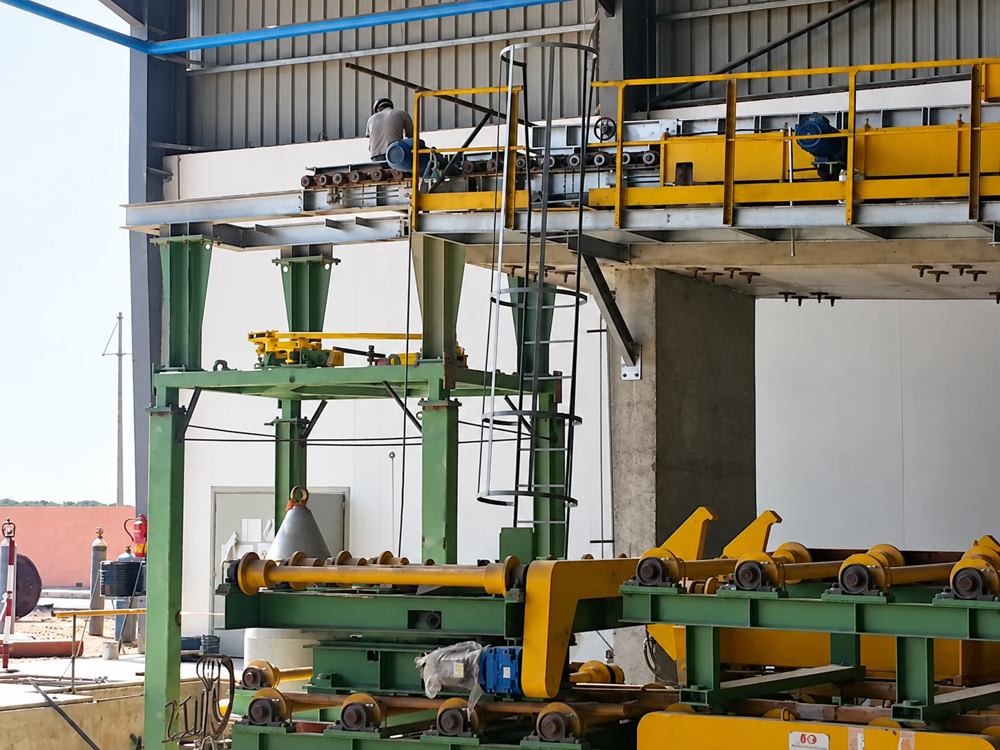
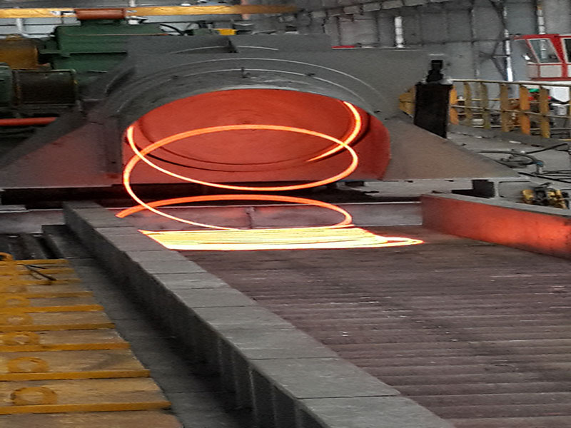
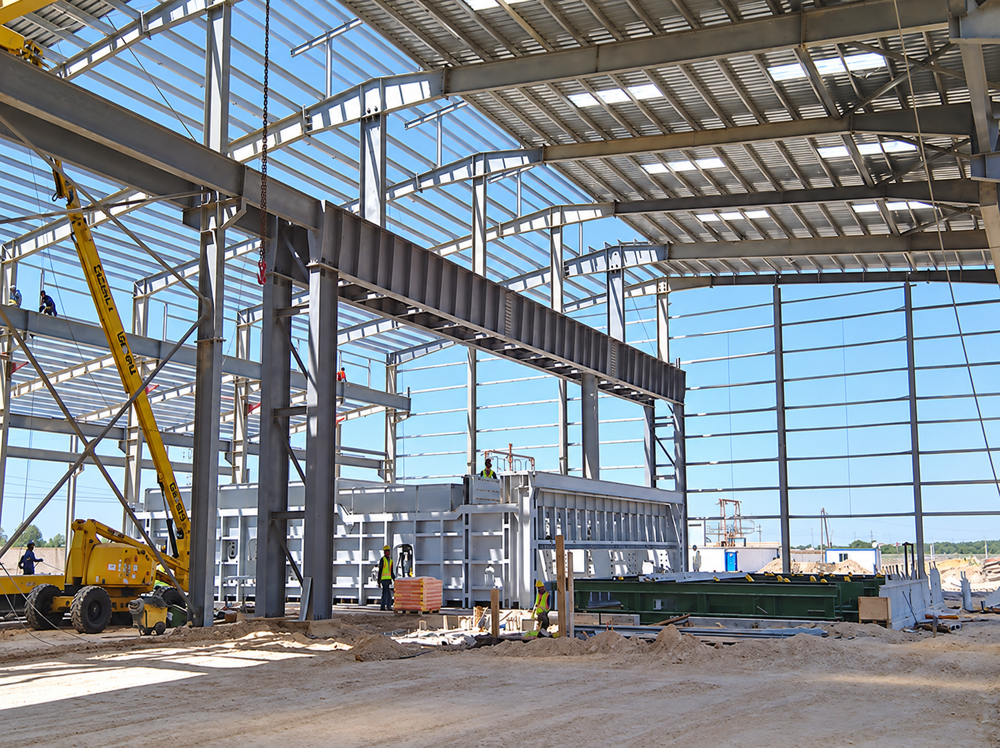
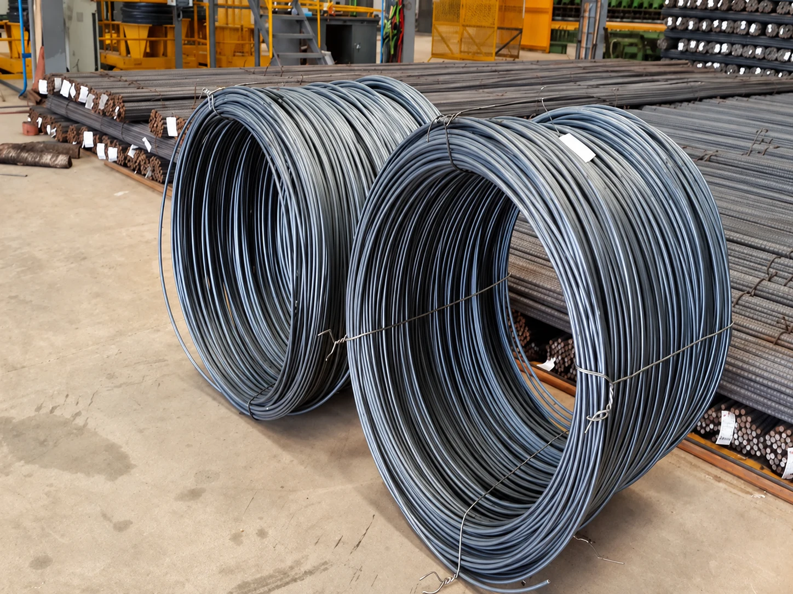
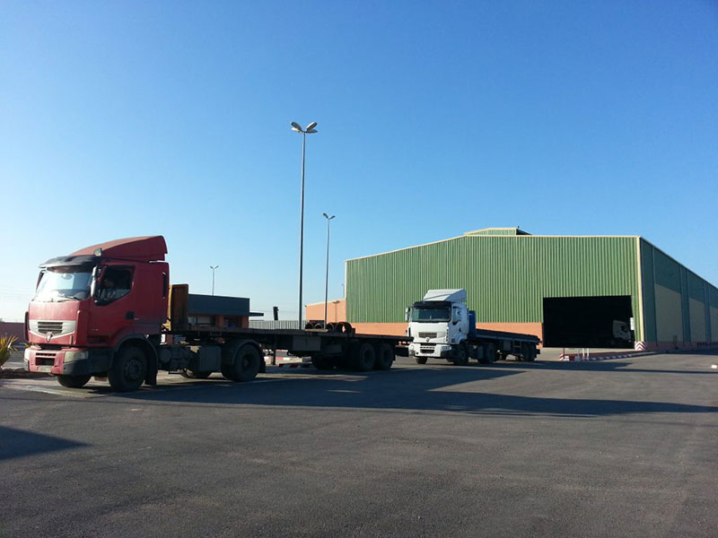

Unité de production
Galerie de production
L’acier qui entre dans le réel.
Le terrain
Du site industriel à la structure.
Cette galerie réunit des vues de notre site industriel, de nos produits et de leur mise en œuvre. Elle montre les étapes qui relient la production sidérurgique aux besoins du bâtiment et des travaux publics.

Stock de barres Marquage du rond à béton
Marquage du rond à béton Stock de barres
Stock de barres
Nos équipes
Coupe et façonnage
Laminage à chaud
Charpente métallique
Bobines de fil machine
Site industrielNos domaines d’intervention
Une expertise au service des chantiers.
BTPbâtiment & travaux publics
Infraéquipements et infrastructures
Sur mesurecoupe et façonnage des armatures
UISTEEL / REFERENCES
Une matière, de nombreux usages
Les produits UISTEEL s’adressent aux professionnels du bâtiment et des travaux publics. La galerie montre les étapes de production, les produits fabriqués sur le site et différentes structures métalliques en chantier.
Construction
Structures en béton armé
Infrastructures
Équipements publics
Industrie
Transformation et approvisionnement